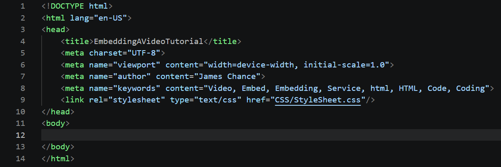
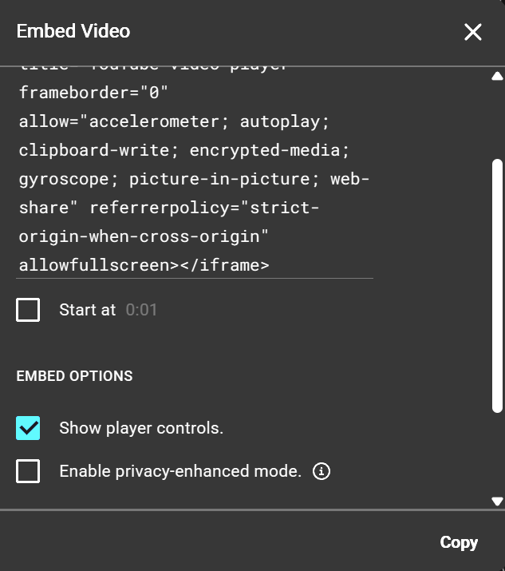
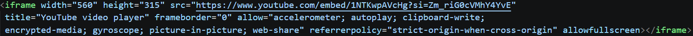

First setup your basic html file code:

Then find the video you want to use from the video service:
Then click the "Share" button:
Then select "Embed" if the video has it enabled:
Next set the available settings for the video and click "Copy":

Then while in your code paste the copied embed code line:

Thats it now you should have the video embedded on your web page: